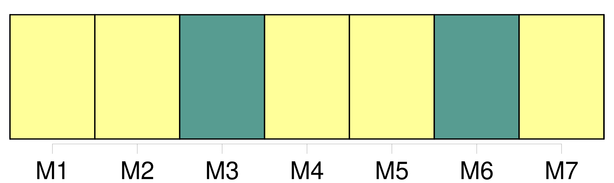
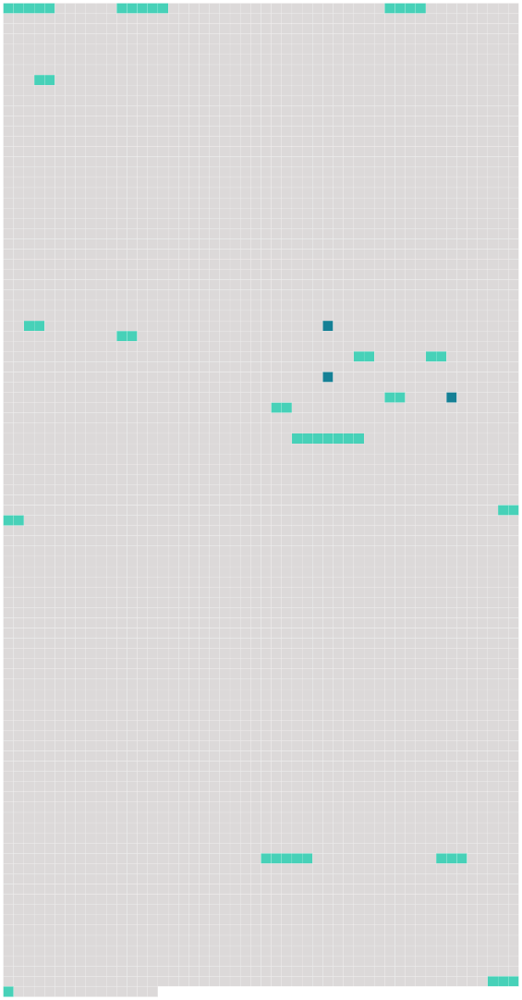

Longueur nb maillons : 18 mentions |
 |
[Du divorce pour cause déterminée] [1 phrases]
Des Formes [du Divorce pour cause déterminée] [1 phrases]
Quelle que soit la nature des faits ou des délits qui donneront lieu à la demande en [divorce pour cause déterminée] , cette demande ne pourra être formée qu'au tribunal de l'arrondissement dans lequel les époux auront leur domicile. [8 phrases]
Le juge ordonnera, au bas de son procès-verbal, que les parties comparaîtront en personne devant lui, au jour et à l'heure qu'il indiquera ; et qu'à cet effet, copie de son ordonnance sera par lui adressée à la partie contre laquelle [le divorce] est demandé. [49 phrases]
Le jugement définitif sera prononcé publiquement : lorsqu'il admettra [le divorce] , le demandeur sera autorisé à se retirer devant l'officier de l'état civil pour le faire prononcer. [1 phrases] Lorsque la demande en [divorce] aura été formée pour cause d'excès, de sévices ou d'injures graves, encore qu'elle soit bien établie, les juges pourront ne pas admettre immédiatement [le divorce] [2 phrases]
Après une année d'épreuve, si les parties ne se sont pas réunies, l'époux demandeur pourra faire citer l'autre époux à comparaître au tribunal, dans les délais de la loi, pour y entendre prononcer le jugement définitif, qui pour lors admettra [le divorce] [1 phrases]
Lorsque [le divorce] sera demandé par la raison qu'un des époux est condamné à une peine infamante, les seules formalités à observer consisteront à présenter au tribunal civil une expédition en bonne forme du jugement de conr damnation, avec un certificat du tribunal criminel, portant que ce même jugement n'est plus susceptible d'être réformé par aucune voie légale. [1 phrases]
En cas d'appel du jugement d'admission ou du jugement définitif, rendu par le tribunal de première instance en matière de [divorce] , la cause sera instruite est jugée par le tribunal d'appel, comme affaire urgente. [5 phrases]
En vertu de tout jugement rendu en dernier ressort ou passé en force de chose jugée, qui autorisera [le divorce] , l'époux qui [l'] aura obtenu, sera obligé de se présenter, dans le délai de deux mois, devant l'officier de l'état civil, l'autre partie dûment appelée pour faire prononcer [le divorce] [5 phrases]
Des Mesures provisoires auxquelles peut donner lieu [la Demande en divorce pour cause déterminée] [13 phrases]
Des Fins de non recevoir contre l'Action en [divorce pour cause déterminée] [64 phrases]
Dans le cas de [divorce prononcé pour cause déterminée] , la femme divorcée ne pourra se remarier que dix mois après [le divorce prononcé] [23 phrases]
Dans les cas où il y a lieu à la demande en [divorce pour cause déterminée] , il sera libre aux époux de former demande en séparation de corps. |
 |
Il est possible de télécharger la ressource sur la page Ortolang |
Si vous avez des questions ou vous voyez des erreurs, merci d'envoyer un mail à silvia.federzoni89@gmail.com |